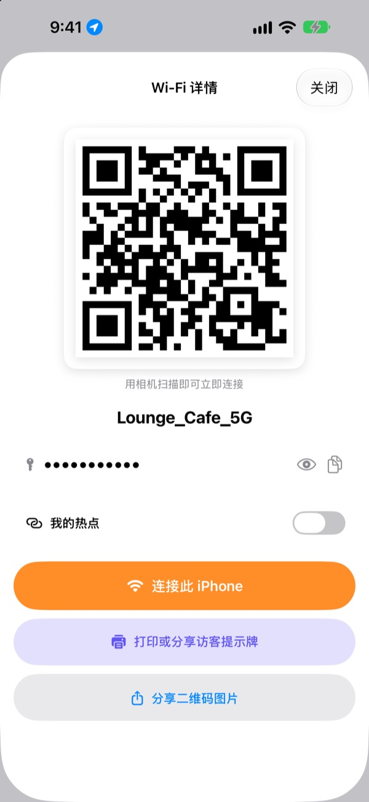
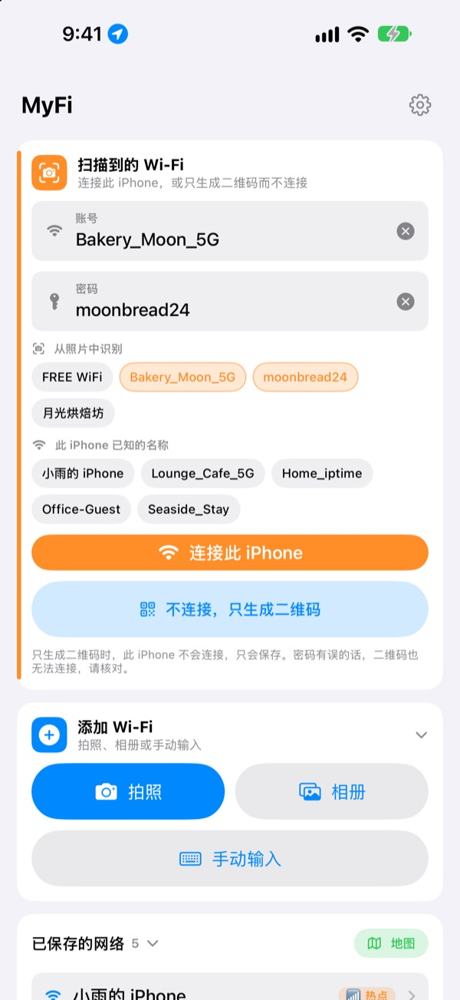
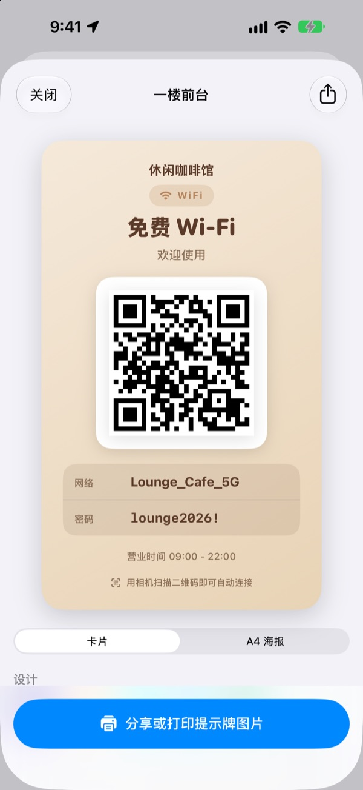
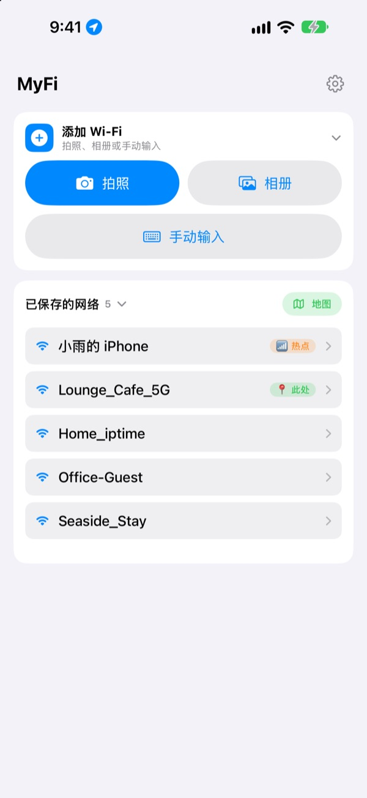

不用再念密码，
一张二维码就够了
朋友用相机扫一下就连上了。咖啡馆墙上的提示牌，拍一张照片这台 iPhone 就能连接。再也不会因为抄错而连不上。
所有功能都免费。支持 iOS 17 及以上的 iPhone。

做一张你的 Wi-Fi 二维码
改一下名称或密码，提示牌马上跟着变。用手机相机扫一下，真的会弹出加入网络的提示。
“Wi-Fi 密码是多少？”今天被问了几次？
念给客人听，大小写说错；照着墙上的提示抄，0 和 O 分不清；然后再解释一遍。MyFi 把这些麻烦变成一张照片和一张二维码。
拍一下就连上
拍下墙上的 Wi-Fi 提示牌或小票，或者从相册里选一张，它会读出网络名称和密码，直接连接这台 iPhone。提示牌上如果有二维码，会先读二维码，结果更准确。
文字没认清时，把从照片里提取的片段拖到名称或密码栏就行。

制作并打印访客提示牌
从7种主题中选一种，加上店名、标志和营业时间等文字。可选卡片或 A4 竖版海报，存成图片，或用隔空打印直接打印。
每家店、每张桌子都可以做不同的提示牌，随时修改。

回到老地方，它排在最前面
连接过或分享过的 Wi-Fi 会连同当时的位置一起保存。回到同一个地方，那里的 Wi-Fi 会排在最上面，保存过的地点也能在地图上看。
常用的 Wi-Fi 可以做成二维码放到主屏幕或锁定屏幕小组件上，客人问起时亮出屏幕就行。

三步就能开始
- 1
打开 App
为了识别当前连接的 Wi-Fi 名称，第一次会请求一次位置权限。
- 2
拍照或输入
拍下提示牌，或者输入一次自己的 Wi-Fi 密码。
- 3
连接或出示
连接这台 iPhone，或者打开二维码给对方的相机扫，就完成了。
在哪里操作
- 用提示牌照片连接
添加 Wi-Fi里选拍照或相册，再点连接此 iPhone- 手动输入后连接
添加 Wi-Fi里选手动输入- 不连接，只做二维码
不连接，只生成二维码- 用信息发送二维码
- 点一个已保存的网络，再点
分享二维码图片 - 访客提示牌
- 点一个已保存的网络，再点
打印或分享访客提示牌 - 把热点做成二维码
- 点一个已保存的网络，打开
我的热点 - 快速连接或分享
- 在列表里向右滑是连接，向左滑是分享二维码
- 查看保存过的地点
已保存的网络旁边的地图- 把二维码放到主屏幕
- 长按主屏幕，添加 MyFi 的
Wi-Fi 二维码小组件
也可以用 Siri 或快捷指令直接打开二维码。
所有功能都免费
免费
- 用照片连接 Wi-Fi
- 生成二维码并以图片分享
- 访客提示牌：7种主题、卡片和 A4 海报、隔空打印
- 主屏幕和锁定屏幕小组件
- 已保存 Wi-Fi 的地图
- 没有广告，不用注册
打赏支持（可选）
- 喜欢的话，可以打赏支持开发
- 打赏不会解锁任何功能，不打赏也能用全部功能
打赏是一次性的小额付款。
没有订阅，也没有付费功能。
常见问题
为什么要自己输入密码？
出于 iOS 的安全规定，任何 App 都读不到设备里保存的 Wi-Fi 密码。所以名称会自动识别，密码只需第一次输入，之后就用保存的值。
看不到当前连接的 Wi-Fi 名称。
iOS 只把 Wi-Fi 名称告诉有位置权限的 App。请在设置 › 隐私与安全性 › 定位服务中允许 MyFi。位置只用来识别 Wi-Fi 名称和认出你回到过的地方。
照片里的名称或密码识别错了。
靠近一点、拍正一点会更容易识别。还是不对的话，把照片里提取的片段拖到正确的栏，或者直接改。提示牌上有 Wi-Fi 二维码时，会读二维码准确填写。
能识别什么样的提示牌？
最擅长用英文或韩文标注的提示牌，比如 ID、PW、SSID、Network、Password。没有标注时，也会挑出像密码的那一行。提示牌上的 Wi-Fi 二维码无论什么语言都能准确读取。
收到二维码的人怎么连接？
不论 iPhone 还是安卓，用自带相机扫一下二维码就会弹出加入网络的提示，不需要装任何 App。
别人能看到我的密码吗？
二维码里是标准的 Wi-Fi 连接信息。要不要分享始终由你决定，提示牌上也可以隐藏密码。
为什么连不上自己的热点？
iPhone 的个人热点就是这台手机本身，它没法连接自己。打开 我的热点 后，MyFi 会把它当作分享给别人的二维码来处理。
我的 Wi-Fi 信息会发到哪里？
MyFi 没有服务器。Wi-Fi 名称和密码、照片识别结果、位置都只在设备里处理和保存。不用广告和追踪工具，只把用于改进 App 的匿名使用统计和错误报告发送到 Apple iCloud。
支持哪些设备？
iOS 17 及以上的 iPhone。App 支持24种语言。
有问题或建议，请发邮件到 leeo@kakao.com。通常2到3天内回复。